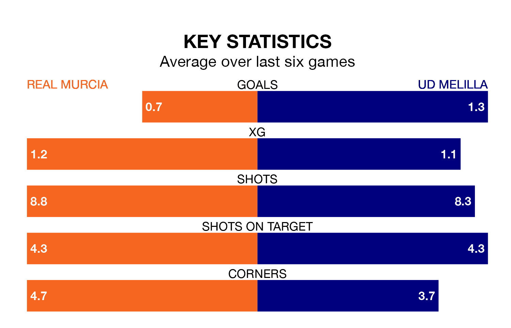

Real Murcia are heavy favourites to keep all three points at home in Sunday's early kick-off against UD Melilla.
Murcia, who sit seventh in Primera Division RFEF Group 2 with 31 games played, are priced at 1.5 to seal victory at the Estadio Nueva Condomina.
Sitting 11 places and 23 points behind them in the table, Melilla are 6.2 to win with *Betting Company*, while the draw is at 3.5.
With Manuel García Humanes between the sticks, Murcia can rely on one of the league's safest pair of hands. He has kept 10 clean sheets in his 19 appearances this season, and only one other 'keeper – Recreativo de Huelva's Rubén Ramos González – has been able to prevent the opposition scoring on more occasions in Primera Division RFEF Group 2.
In Melilla's net, Javier Montoya Monente has seven clean sheets in 17 games.
In the last 10 years, Murcia and Melilla have played each other on 11 occasions. Murcia won three of them, Melilla one, and they drew seven times.
On average, Murcia scored 0.8 goals and Melilla 0.5 in those matches.
Their last meeting was on January 14, when they played out a 0-0 draw.
The home team are in good form in Primera Division RFEF Group 2, with four wins and a draw from their last six games.
With a win and two draws over that period, the visitors' form is much worse – they have taken five points from 18, compared to Murcia's 13.
With 21 goals in 31 games so far this season, Melilla are the league's third-lowest scorers with 0.7 goals per game. And they are conceding more than average, letting in 46 goals at a rate of 1.5 per game.
Murcia are also below average scorers, with 0.9 goals per game, compared to a league average of 1.1. They have conceded 1.0 goal per game.
Murcia's last match was on Sunday, a 1-0 win against Algeciras CF, with Juan Miguel Carrión Gallardo getting the goal for Murcia.
Melilla lost 4-3 against UD Ibiza last time out, also on April 7, with Ousama Siddiki (two) and José Enrique Rodríguez on the scoresheet.
Updated: 10:01 (UTC), 12/04/24